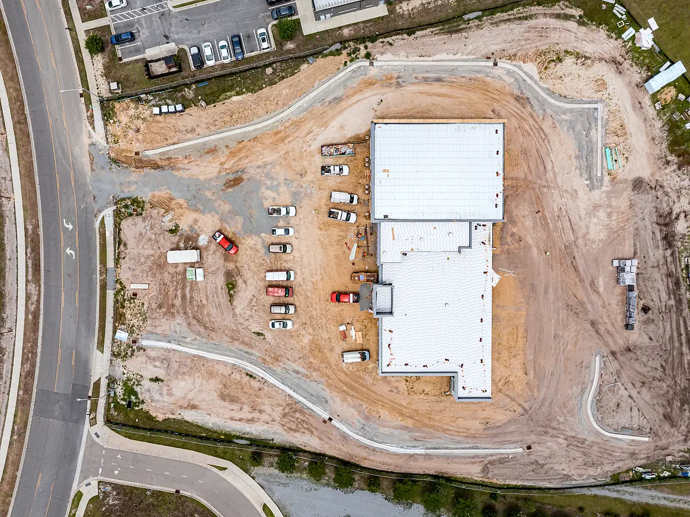
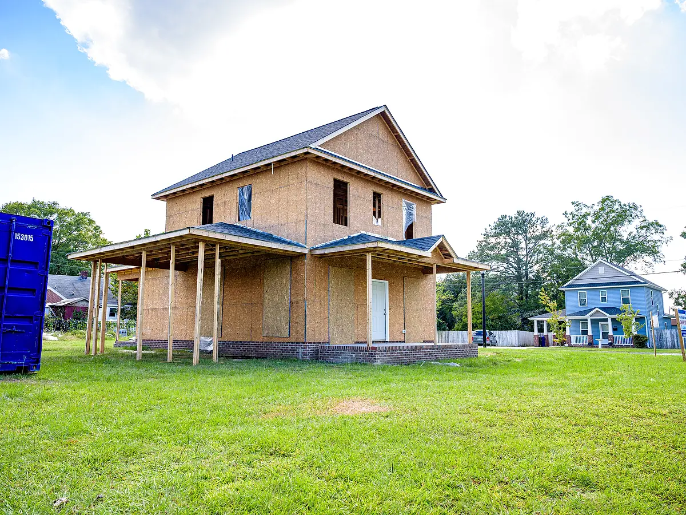
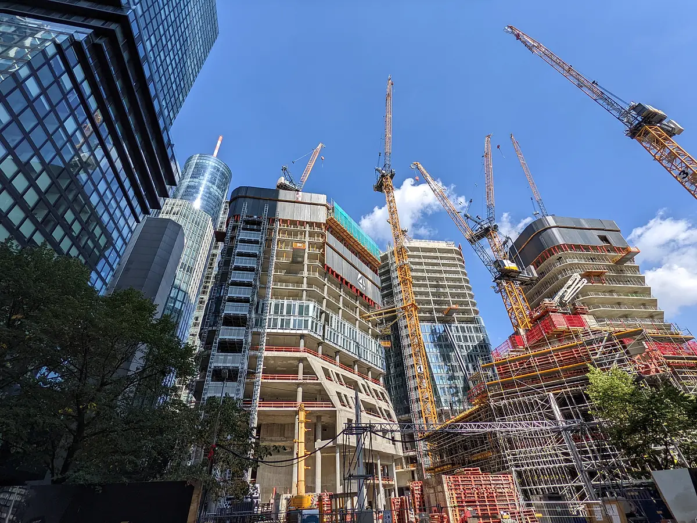
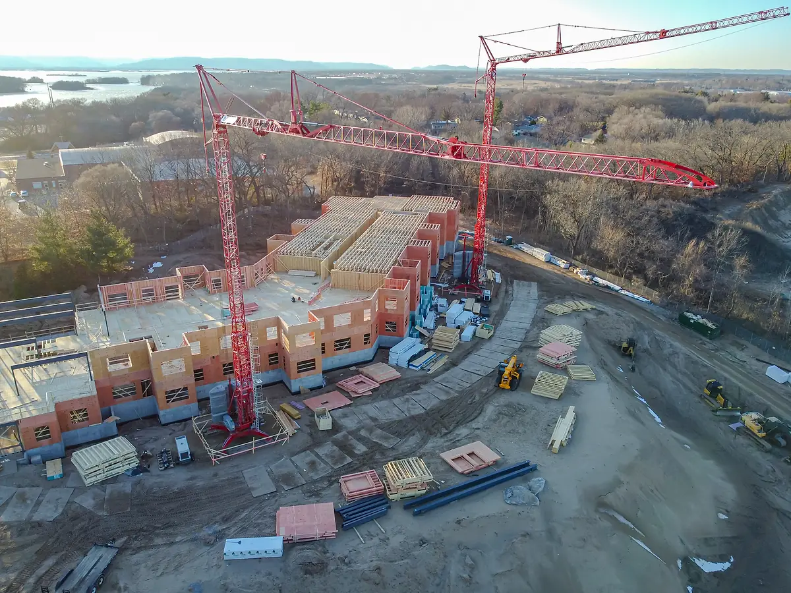
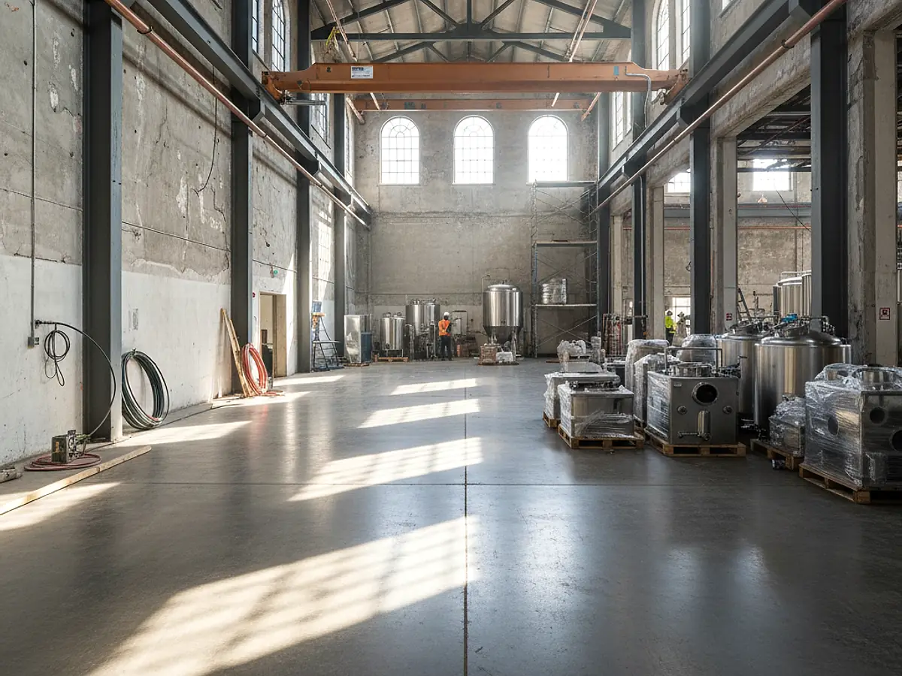
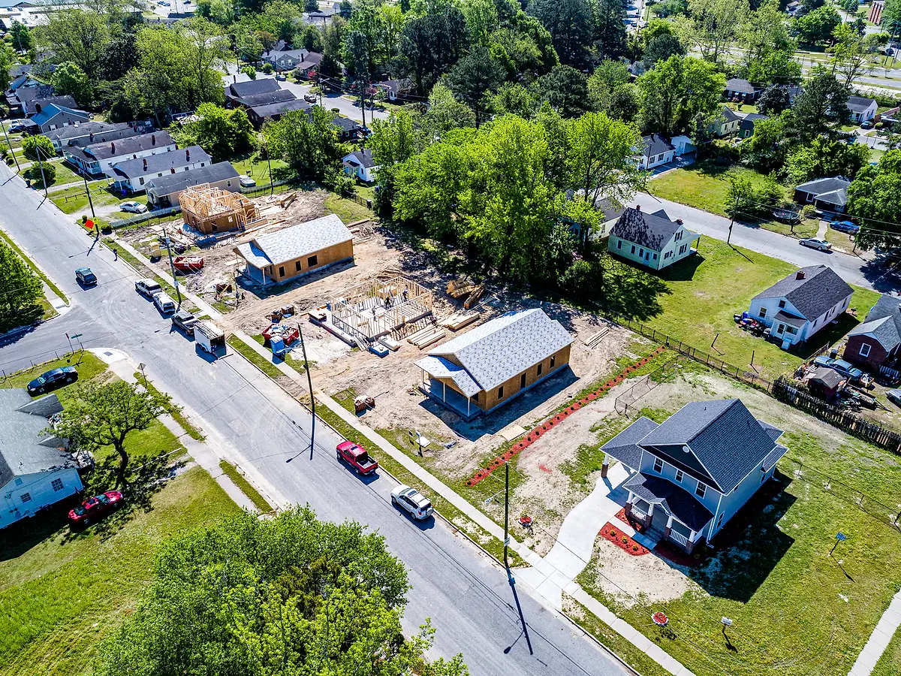
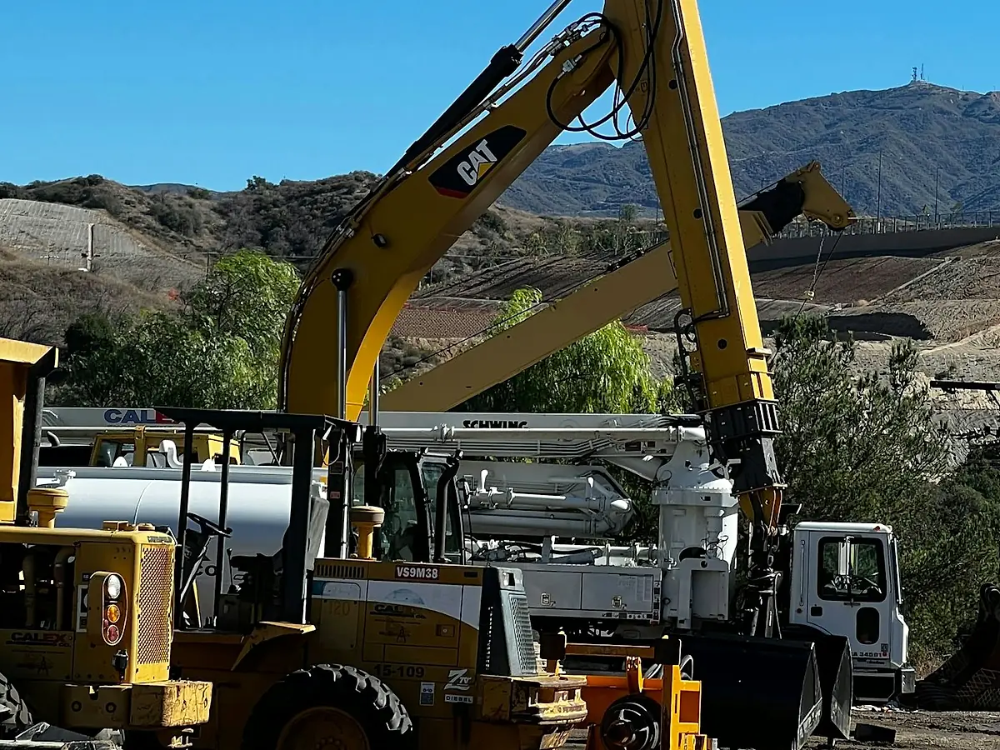
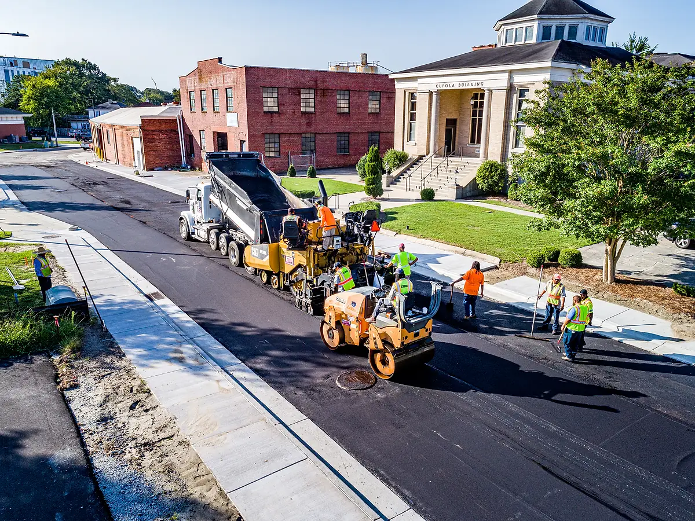

Industries
Trade EstimatingAcross Sectors
Houses, commercial buildings and industrial facilities are each priced differently. We prepare roofing, cladding, structural, electrical, plumbing and whole building estimates for builders and subcontractors, measured to the method your market uses — ASMM, NRM2, CSI MasterFormat, CIQS or NZS 4202 — or to your own BOQ template.


Industry
Residential
Houses, townhouses, multi-unit and apartment projects. Quantities are organised by trade and stage, so they can go straight into supplier quotes, ordering and subcontract packages.
Typical estimating scope
- Roofing and roof drainage
- Slab, frame and wall cladding quantities
- Electrical and plumbing quantities where drawings are provided
- Internal finishes, doors and joinery schedules
- Material lists for ordering

Industry
Commercial
Offices, retail, hospitality and fit-out projects. Quantities are split into trade packages, so the builder and every subcontractor price the same measured scope, with clarifications recorded for the tender.
Typical estimating scope
- Structural and façade cladding quantities
- Electrical, plumbing and mechanical services quantities
- Fit-out and finishes packages
- Trade package BOQs for subcontract pricing
- Tender estimates and clarifications

Industry
Buildings
Multi-storey residential and commercial buildings. Quantities are broken down level by level and trade by trade, so structure, cladding, services and finishes can be priced as separate packages or brought together in a whole building estimate.
Typical estimating scope
- Concrete and steel frame quantities
- Façade and cladding packages
- Electrical and plumbing services quantities
- Floor-by-floor quantity breakdowns
- Finishes schedules

Industry
Industrial
Factories, plants and industrial facilities. Steel is measured by member and totalled by tonnage, and heavy-duty slabs, footings and equipment pits are measured separately from general building work.
Typical estimating scope
- Structural steel frames and tonnage
- Roofing and wall cladding
- Industrial slabs, footings and pits
- Services and plant-related builders' work
- Labour and plant estimates
Industry
Warehouses
Logistics, storage and distribution buildings. Much of the cost sits in the slab, portal frame and cladding, so these are measured in detail — slab joints and thickenings, frame tonnage, sheeting and flashings.
Typical estimating scope
- Portal frame structure
- Roof and wall cladding
- Large-area slabs and joints
- Dock and door schedules
- Hardstands and external works

Industry
Developments
Master-planned, mixed-use and staged housing sites. Estimates can be split by stage and into building and civil works, so early feasibility figures can be refined as the design develops.
Typical estimating scope
- Building works and trade packages
- Stage-by-stage quantity breakdowns
- Early-stage cost estimates for feasibility
- Services and utilities infrastructure
- Subdivision earthworks and roads

Industry
Civil & Infrastructure
Earthworks, drainage, utilities and structures. Cut and fill volumes are calculated from existing and design surfaces (survey data or LandXML where available), with cut/fill and site-balance reports alongside the BOQ.
Typical estimating scope
- Cut and fill, excavation and backfill
- Stormwater drainage and culverts
- Utilities trenching and pits
- Retaining walls and civil concrete
- Site preparation and temporary works

Industry
Roads & Highways
Pavements, intersections, kerbs and road drainage. Quantities are measured along the alignment by chainage and pavement layer, so they tie back to the long sections and typical cross-sections.
Typical estimating scope
- Pavement layers by chainage
- Kerbs, channels and footpaths
- Road drainage and pits
- Line marking and signage items
- Earthworks and subgrade treatment
Pricing a different trade or sector?
If your trade or project type is not listed, send us the details — we will let you know how we can help.